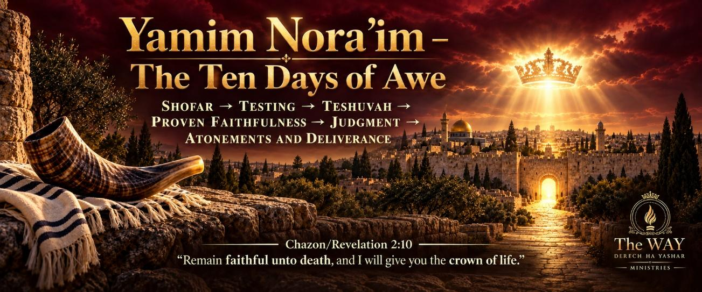

Contents

Ten Days of Testing, Tribulation, Teshuvah and Proven Faithfulness
The period begins with the Yom Teruah/Day of Trumpets on the first day of the seventh month and concludes with the Yom haKippurim/Day of Atonements on the tenth day.
These ten numbered calendar dates are traditionally known as the Ten Days of Awe— Yamim Noraim.
Vayiqra/Leviticus 23:24 “In the seventh month, on the first day of the month, you are to observe a day of solemn rest, a memorial of shofar blasts/shouting (teruah), a set-apart gathering/a sacred occasion.”
Vayiqra/Leviticus 23:27 “On the tenth day of this seventh month there shall be a day of Atonements/Coverings (Kippurim): it shall be a set-apart convocation/gathering unto you; and you shall afflict (anah) your souls, and offer an offering made by fire unto יהוה.”
Together, this ten-day period frame the following prophetic progression:
Shofar warning → Testing → Teshuvah → Examination → Judgment → Atonements and Deliverance
WHY ARE THEY CALLED “DAYS OF AWE”?
The Hebrew word nora conveys something awesome, fearful, reverence-producing or terrible in power.
YO’EL — YOM TERUAH, YOM HAKIPPURIM AND THE AWESOME DAY OF יהוה
Yo’el presents a shofar of warning, an urgent call to return and another shofar calling the people to a set-apart fast and gathering.
Yo’el 2:1 “Blow the trumpet/ram’s horn (shofar) in Tziyon, and sound an alarm on My set-apart mountain [corresponding with Yom Teruah—the Day of Trumpets]. Let all the inhabitants of the land tremble, for the Day of יהוה is coming; it is near/approaching.”
Yo’el 2:11 “יהוה utters His voice before His army, for His camp is exceedingly great. Strong is the One who executes His Word, for the Day of יהוה is great and very awesome/terrible. Who can endure it?”
Yo’el 2:12 “Therefore, even now,” declares יהוה, “turn to Me with all your heart, with fasting, with weeping and with mourning.”
Yo’el 2:13 “Tear your heart, and not your garments, and turn to יהוה your Elohiym, for He is gracious and merciful, slow to anger, abundant in lovingkindness, and relents concerning calamity.”
Yo’el 2:15 “Blow the trumpet/ram’s horn (shofar) in Tziyon, set apart a fast (tzom), and call a solemn gathering [corresponding with Yom haKippurim—the Day of Atonements].”
Yo’el 2:16 “Gather the people, set apart the congregation, assemble the elders, and gather the children and nursing infants. Let the bridegroom (chathan) come out from his chamber, and the bride (kallah) from her bridal chamber (chuppah).”
The sequence closely corresponds with the movement from Yom Teruah to Yom haKippurim:
Shofar of warning → Urgent call to return → Shofar calling a fast and solemn gathering
Yo’el 2:31 “The sun shall be turned into darkness, and the moon into blood, before the coming of the great and awesome Day of יהוה.”
Yo’el 2:32 “It shall come to pass that whoever calls on the Name of יהוה shall be delivered.
For in Mount Tziyon and in Yerushalayim there shall be deliverance, as יהוה has said, and among the remnant whom יהוה shall call.”
MALACHI — THE GREAT AND AWESOME DAY
Malachi uses the same word nora and announces that Elijah will come before the great and awesome Day of יהוה.
Malachi 4:5 “Behold, I will send Eliyahu the prophet before the great and awesome Day of יהוה comes.”
ZEPHANYAH/ZEPHANIAH — YOM TERUAH AND THE DAY OF יהוה’S WRATH
Zephanyah joins the approaching Day with wrath, distress, darkness, the shofar and battle:
Zephanyah 1:14 “The great Day of יהוה is near/approaching and coming quickly! The sound of the Day of יהוה will be that of a warrior shouting bitterly.”
Zephanyah 1:15 “That Day is a Day of wrath, a Day of trouble and distress, a Day of desolating storm and destruction, a Day of darkness and gloominess, a Day of clouds and thick darkness.”
Zephanyah 1:16 “A Day of the trumpet/ram’s horn (shofar) and battle-cry alarm (teruah) against the fortified cities and against the high towers.”
Zephanyah 1:17 “I will bring distress upon men, and they shall walk like blind men because they have sinned against יהוה. Their blood shall be poured out like dust and their flesh like dung.”
Zephanyah 1:18 “Neither their silver nor their gold shall be able to deliver them in the Day of יהוה’s wrath. The whole land shall be devoured by the fire of His zeal, for He will make a speedy end of all who dwell in the land.”
Together, Yo’el, Malachi and Zephaniah explain why these are called Days of Awe:
Shofar warning → Urgent call to return → The great and awesome Day → Darkness → Judgment → Deliverance
They concern יהוה’s approaching presence and judgment—but also His urgent call to return while mercy is still being extended.
TEN DAYS OF TESTING
The central passage behind this image is Yeshua’s message to the assembly of Smyrna:
Chazon/Revelation 2:10 “Don’t be afraid of the things you are about to suffer. Behold, the Devil is about to throw some of you into prison, so that you maybe tested; and you will have tribulation for ten days. Be faithful unto death, and I will give you the Crown of Life.”
Chazon/Revelation 2:11 “Let everyone who has ears hear what the Spirit says to the assemblies. The one who overcomes will not be harmed by the second death.”
Smyrna is commanded to remain faithful through a divinely bounded ten-day trial involving imprisonment, testing, tribulation and possible death. Those who overcome receive the crown of life and deliverance from the second death.
The historical assembly also experienced persecution, so an end-time fulfillment remains interpretive. Nevertheless, its pattern corresponds remarkably with the Ten Days of Awe.
THE TEN-DAY TRIAL — REFINED, PROVEN AND CROWNED
The ten-day trial of Smyrna is not merely a period of suffering. These passages show how testing refines faith, proves faithfulness and leads to the promised crown of life.
Malachi 3:2–3 “Who will be able to endure the day of His coming, and who will be able to stand when He appears? He will be like a refiner’s fire and like a launderer’s soap. He will sit as one who refines and purifies silver.”
Kepha Aleph/1 Peter 1:6–7 “For a little while you may have to suffer through various trials. These come so that the proven character of your faith—more valuable than gold that perishes even though it is tested by fire—may result in praise, honor and glory when Yeshua Messiah is revealed.”
Ya’aqov/James 1:12 “Blessed is the person who endures testing, because after being aproved, that person will receive the crown of life that יהוה has promised to those who love Him.”
Together, these passages illuminate the purpose and outcome of Smyrna’s ten-day trial:
Testing → Refined faith → Proven faithfulness → The crown of life
PHILADELPHIA AND SMYRNA — TWO EXPERIENCES OF TESTING
Philadelphia and Smyrna are the only two assemblies in Chazon/Revelation 2–3 that receive no rebuke. Both are faithful, face opposition, must endure and are associated with a crown. Yet their experiences of testing differ.
Chazon/Revelation 3:10–11 “Because you have kept My word of endurance, I will also keep you from the hour of testing that is about to come upon the whole world to test those who live on the earth. I am coming quickly. Hold firmly to what you have so that no one takes your crown.”
Luqas/Luke 21:36 “Stay alert at all times and pray that you may be counted worthy to escape everything that is about to happen and to stand before the Son of Man.”
Yeshayahu/Isaiah 26:20–21 “Come, My people, enter your rooms and close the doors behind you. Hide for a little while until the indignation has passed. Behold! יהוה is coming from His dwelling place to punish the inhabitants of the earth for their wrongdoing.”
These passages present two possible experiences:
✦ Philadelphia — preserved from the worldwide testing hour.
✦ Smyrna — proven through a severe ten-day trial.
This may portray one faithful company gathered on Yom Teruah while another passes through the following ten days until Yom haKippurim. That proposed timetable remains an interpretation formed by combining the passages.
NONCANONICAL WITNESSES
GAD THE SEER — THE BOOKS OPENED
Gad 14 begins on the first day of the seventh month and presents a heavenly throne, three books, judgment, everlasting life and an intermediate group whose case remains open. Gad 14:10 “He read the second book, which contained the unintentional sins of His people, and יהוה said, ‘Put that book aside, but preserve it until one-third of the month has passed, to see what they will do.’”
In a thirty-day month, one-third corresponds approximately to the tenth-day boundary:
First day of the seventh month → Time to observe their response → Approximate tenth-day boundary
This provides a striking possible parallel with Yom Teruah → A final opportunity to respond → Yom haKippurim.
YASHER/JASHER — IMPRISONMENT AND BATTLE
Yasher 12 — Avram is imprisoned for ten days, refuses to abandon יהוה, aces death, is cast into a fiery furnace and is divinely preserved.
Ten days in prison → Faithfulness tested → Fiery trial → Divine deliverance
Yasher 63:31 “At the end of ten days, Angeas renewed the battle against Zepho and the children of Chittim, and the battle betwen them was very great and fierce.”
This adds another pattern of a great battle beginning at the completion of ten days, offering a possible parallel with Armageddon on Yom haKippurim.
THE SHEPHERD OF HERMAS
✦ Vision 4 — Hermas travels approximately ten stades before encountering a beast representing the coming Great Tribulation. He is instructed to prepare, repent, purify his heart, overcome fear and pass through the trial by faith. The measured ten preceding the beast forms a noteworthy structural parallel.
✦ Similitude 8 — Branches from the willow tree representing the Law are distributed and later examined.
✦ Similitude 9 — The twelve virgins represent the divine qualities and powers of the Son of יהוה: Faith, Self-control, Power, Patience, Simplicity, Innocence, Purity, Cheerfulness, Truth, Understanding, Harmony and Love. Those who bear their names and powers are prepared to enter the tower.
Together, Hermas presents:
The Law → Trial → Teshuvah → Examination → Crowns → Righteous garments → Entrance into the tower
OTHER SCRIPTURAL TEN-DAY PATTERNS
Dani’el 1:12–20 — Dani’el and his companions are tested for ten days, examined afterward and found healthier. יהוה gives them knowledge, skill and wisdom, and they are found ten times better than the king’s advisers.
Bereshit/Genesis 24:55–67 — Rivkah’s family asks that she remain “ten days or so,” but the servant asks not to be delayed. When Rivkah is asked whether she will go with him, she answers, “I will go.” The servant then escorts her to Yitschaq, her bridegroom. This provides a possible prophetic pattern of the Bride remaining ready, answering the call and being gathered to Yeshua the Bridegroom on Yom Teruah, before the following ten-day period. The servant’s request not to be delayed also contrasts with the wicked servant’s thought, “My Master is delaying” (Mattithyahu/Matthew 24:48).
Shemu’el Aleph/1 Samuel 25:36–38 — judgment falls upon Nabal after an interval of about ten days.
YOM KIPPURIM, JUDGMENT AND THE FINAL BATTLE
Yom haKippurim is associated with atonements, affliction, cleansing and accountability before יהוה.
Chazon/Revelation 19:11 “I saw heaven opened, and there before me was a white horse. Its Rider is called Faithful and True, and with righteousness He judges and makes war.”
Chazon/Revelation 19:14 “The armies of heaven followed Him on white horses, clothed in fine linen, white and clean.”
Chazon associates the fine linen with the righteous deeds of the set-apart ones. Its whiteness also corresponds visually with the high priest’s linen garments on Yom haKippurim.
Vayiqra/Leviticus 16 presents two goats: one is offered to יהוה, while the sins of the people are confessed over the other before it is sent into the wilderness. Chazon may present a prophetic counterpart in the removal and confinement of haSatan:
Chazon/Revelation 20:1–3 “I saw an angel coming down from heaven, holding the key to the abyss and a great chain. He seized the dragon—the ancient serpent, who is the devil and Satan—and bound him for one thousand years. He threw him into the abyss, shut it and sealed it over him.”
In 1 Enoch, Azazel is likewise bound and confined in the wilderness, strengthening the typological comparison with the goat sent to Azazel.
Chazon/Revelation 11:15, 18–19 “The seventh angel sounded his trumpet, and loud voices in heaven announced, ‘The kingdom of the world has become the kingdom of our Master and of His Messiah’…The time came for the dead to be judged and for Your servants to be rewarded…Then יהוה’s temple in heaven was opened, and the Ark of His Covenant was seen within His temple.”
Together, these passages present a possible prophetic correspondence:
Yom haKippurim → Atonement → Judgment → Warrior King → Removal of evil → Kingdom of יהוה
Taken together, these passages form a compelling prophetic correspondence between Yom haKippurim and the final battle, although Scripture does not explicitly identify the calendar date on which that battle occurs.
WHAT THE TEN DAYS OF AWE REPRESENT
Taken together, these passages present the Ten Days of Awe as a possible prophetic period beginning with the shofar warning of Yom Teruah and moving toward the atonements, judgment and deliverance associated with Yom haKippurim.
Some may be preserved from the worldwide hour of testing, while others may be called to remain faithful through a severe but measured trial. During this time, repentance remains urgent, faith is refined and allegiance is proven. Those who overcome remain faithful to Yeshua, keep יהוה’s commandments and receive the crown of life.
This exact future timetable remains interpretive, but the cumulative pattern is striking:
Shofar → Testing → Teshuvah → Proven Faithfulness → Judgment → Atonements and Deliverance
Chazon/Revelation 2:10 “Remain faithful unto death, and I will give you the crown of life.”